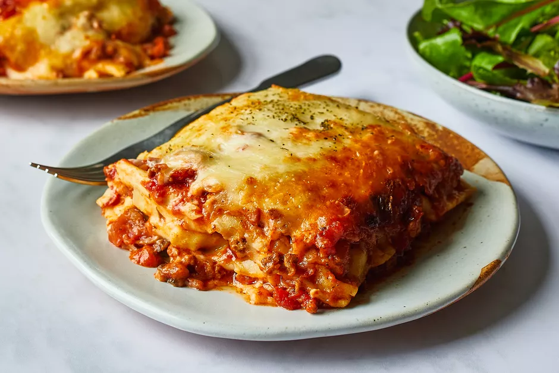

Lasagna

Your moms Lasagna
With this recipe you will be able to make a delicious dinner for your family that is able to serve up to 4 people.
Ingredients
- 1 pound of lean ground beef
- 1 jar of spaghetti sauce
- 32 Ounces of cottage cheese
- 3 cups of shredded Mozzarella cheese
- 2 eggs
- 1/2 cup grated Parmesan cheese
- 2 teaspoons dried parsley
- salt to taste
- ground black pepper to taste
- 9 lasagna noodles
- 1/2 cup of water
Steps
- Preheat the oven to 350 degrees
- warm large skillet over medium heat. Add ground beef and cook until browned
- mix together cottage cheese, 2 cups of Mozzarella cheese, eggs, grated Parmesan cheese, dried parsley, salt, and black pepper in a large bowl.
- Spread 3/4 cups of sauce in a baking dish. cover with uncooked noodles, mixture, and 1/4 sauce.
- bake in the preheated oven for 45 minutes. Uncover for an additional 10 minutes. Let stand before serving.